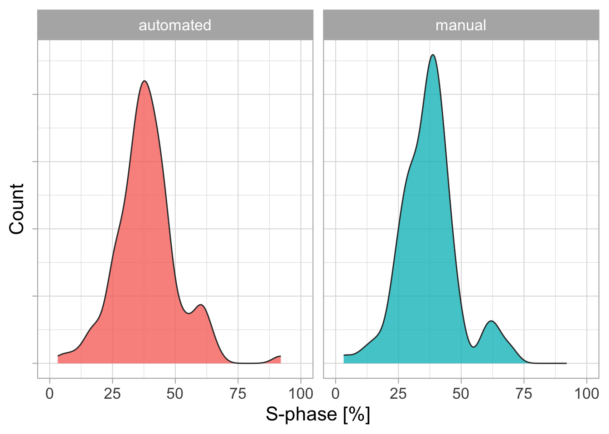
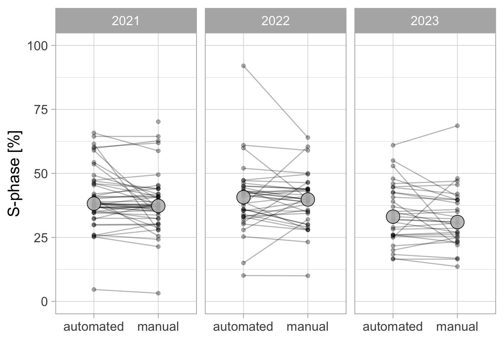
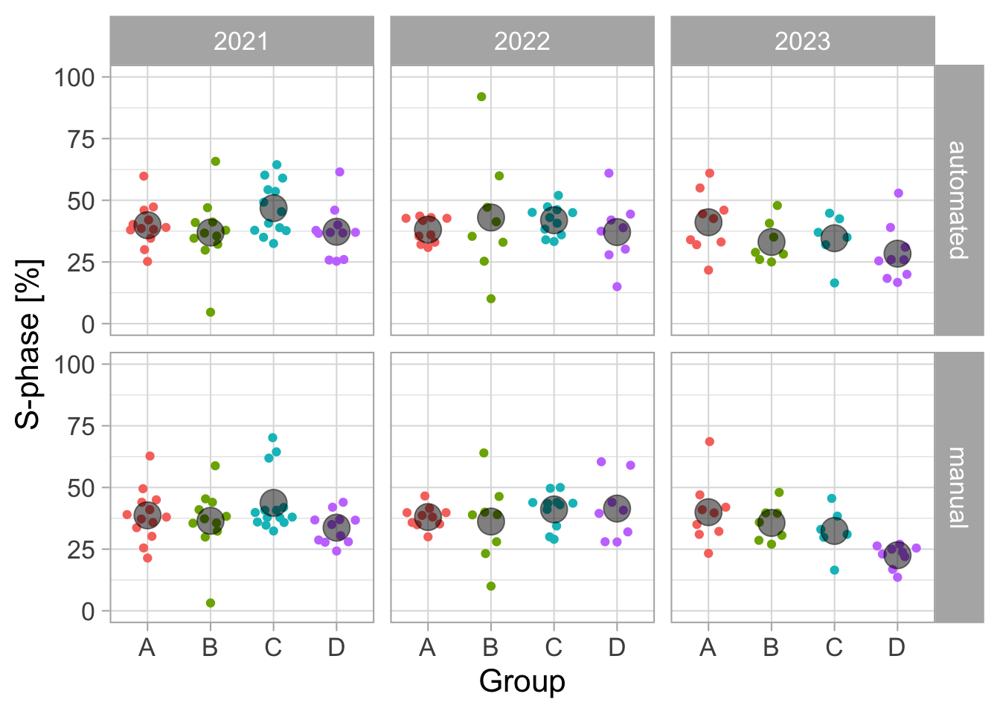
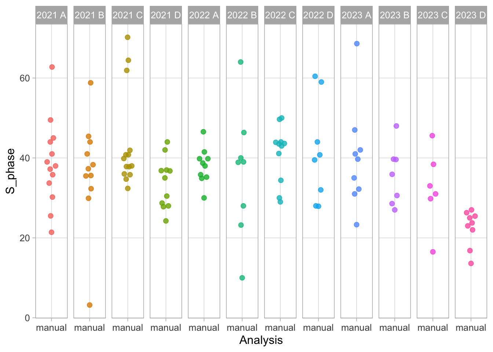
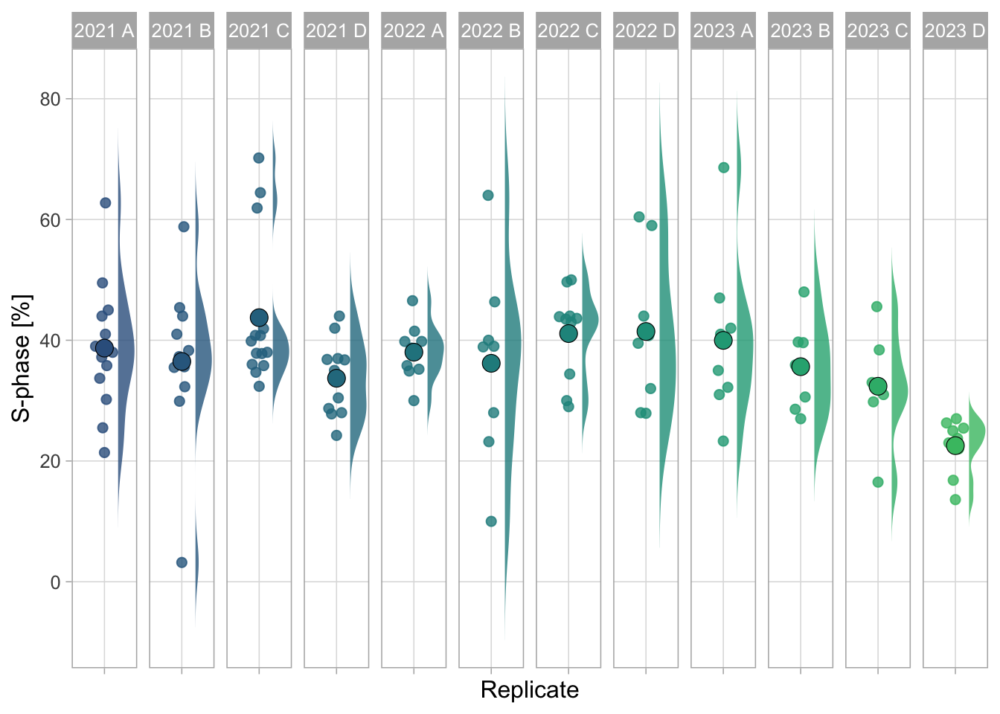

We summarize and display the data that is measured by students in the course “Cellulaire Oncologie”. HeLa cells were incubated with EdU and subjected to click chemistry to label the cells in the S-phase. The students analyzed the images by hand and with an image analysis procedure (based on thresholding and particle analysis) in ImageJ/FIJI.
The data of each student is submitted through a Google Form and collected in a Google Sheet. The students also provide information on the group that they are in, as the group is treated as an independent variable.
First, we load the necessary R packages for data handling and plotting:
We can make a first plot that shows the distribution of the values for both type of analyses. This will give some impression of an average percentage of cells that are in the S-phase:
In [5]:
p <-ggplot(df, aes(x=S_phase, fill=Analysis)) p <- p +geom_density(alpha=0.8, color='grey20') p <- p +labs(y="Count", x="S-phase [%]") p <- p +coord_cartesian(xlim =c(0,100)) p <- p +theme_light(base_size =16) +theme(axis.text.y =element_blank()) p <- p +facet_wrap(~Analysis) p <- p +theme(legend.position ="none") p

The distributions for the automated and manual analysis look similar. Since every student did the analysis by hand and in automated fashion, we can directly compare these ‘paired’ data and we split it for the different years:
In [6]:
p <-ggplot(df, aes(x=Analysis, y=S_phase)) p <- p +geom_point(alpha=0.3) +geom_line(aes(group=Time), alpha=0.3) +stat_summary(fun = median, geom ="point", size=6, shape=21, fill="grey", alpha=0.9) p <- p +labs(x="", y="S-phase [%]") p <- p +coord_cartesian(ylim =c(0,100)) p <- p +theme_light(base_size =16) p <- p +facet_wrap(~year) p

Comparing the manual and automated analysis.
Each paired measurement is connected with a line and the slopes of the line vary substantially. Still, the average value (the large grey dot) for the two different counting methods is similar for each year. There is a difference for the averages between years, and this may be true biological variation between the cell cultures.
To get a fair estimate of the percentage of cells in the S-phase, we treat treat each group in each year as an independent measurement. Each of these independent measurements consists of multiple measurements (technical replicates) and we can plot this in a ‘superplot’ style, see also Lord at al. (2020). The individual measurements are shown as small dots and their median as a large dot:
In [7]:
p <-ggplot(df, aes(x=Group, y=S_phase, color=Group))p <- p +geom_quasirandom() +stat_summary(fun = mean, geom ="point", size=6, color="black", alpha=0.5)p <- p +labs(x="Group", y="S-phase [%]")p <- p +coord_cartesian(ylim =c(0,100))p <- p +theme_light(base_size =16)p <- p +theme(legend.position ="none") +facet_grid(Analysis~year)p

The percentage of HeLa cells in S-phase, presented as a superplot
We consider the manual analysis (nuclei counted by hand) as the ground truth. So I only select the manually processed data:
In [8]:
df_manual <- df %>%filter(Analysis =='manual')
Next, I merge the date and group data, as this will give a column that reflects independent measurements:
This data set will be saved, as it can be used as input for SuperPlotsOfData:
In [10]:
df_results %>%write.csv("results_S-phase.csv")
The SuperPlotsOfData app plots the data and calculates the statistics. We can repeat the calculations and the data analysis here. First we generate a dataframe that summarizes all individual measurements per independent measurement (defined by the column ‘Replicate’):
# A tibble: 1 × 3
N Average `95% CI`
<dbl> <dbl> <chr>
1 12 36.7 33 - 40.3
Let’s now generate a superplot for the individual replicates, repeating what can be done in the app with the data in `results_S-phase.csv``. First we generate dotplots from the replicates:
In [14]:
p <-ggplot(df_results, (aes(x=Analysis, y=S_phase, color=Replicate, fill=Replicate)))p <- p +geom_quasirandom(width = .2, varwidth =FALSE, cex=2, alpha=0.8, groupOnX=TRUE)p <- p +facet_grid(.~Replicate)p <- p +theme_light(base_size =12) +theme(panel.grid.minor =element_blank())p <- p +theme(legend.position="none")p

We add the summary statistic for each replicate as a large dot. And with some styling (adjusting colors, labels), we generate the superplot:
In [15]:
p <- p +geom_flat_violin(color=NA, scale ="width", width=0.6,position =position_nudge(x = .25, y =0), trim=FALSE, alpha =0.8)p <- p +stat_summary(fun = mean, geom ="point", shape=21, stroke = .3, size=4, color="black", alpha=1)p <- p +scale_fill_viridis_d(begin=0.3, end=0.7)p <- p +scale_color_viridis_d(begin=0.3, end=0.7) p <- p +labs(x="Replicate", y="S-phase [%]")p <- p +theme(axis.text.x =element_blank())p
Warning: Using the `size` aesthietic with geom_polygon was deprecated in ggplot2 3.4.0.
ℹ Please use the `linewidth` aesthetic instead.

Data on the percentage of cells in e S-phase based on manual analysis. Each group & year defines an independent observations and is shown as dotplot and the distribution. The larger dot reflects the median value.
To visualize the individual independent values, with a unique color per year we can make a dotplot. The dotplot will be more valuable and informative when we have accumulated more data:
A distribution of the results. Each dot represents an independent observation, based on the average of a group. The dots are color-coded according to the different years.